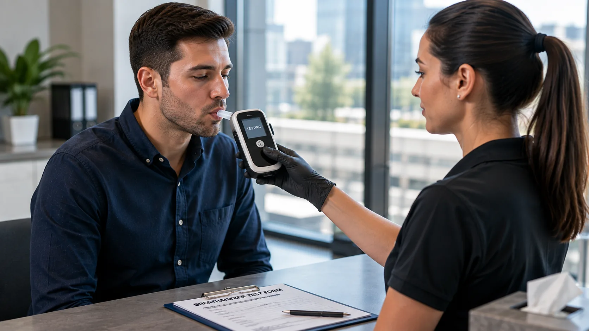

Workplace Policy Testing
Support employer alcohol-testing policies outside of DOT-regulated programs.
Professional non-regulated breath alcohol testing for workplace policy, post-incident, legal, and personal testing needs.

Non-regulated testing supportNon-DOT breath alcohol testing can be used when federal DOT testing rules do not apply and testing is being completed for a workplace policy, legal requirement, post-incident need, or personal reason.
Support employer alcohol-testing policies outside of DOT-regulated programs.
Coordinate alcohol testing after a workplace incident when required by company policy.
Testing support for legal, court-related, or monitoring requirements.
Personal breath alcohol testing when documented results are needed.
The original service page includes three non-DOT breathalyzer options for individual, legal, and workplace use.
A straightforward non-DOT breath alcohol testing option for personal or workplace needs.
Order Now →Breath alcohol testing for court-related, legal, or documented monitoring requirements.
Order Now →A workplace-focused non-DOT alcohol testing option designed around employer policy needs.
Order Now →Non-DOT breath alcohol testing is not the same as DOT-regulated alcohol testing. The testing reason, documentation requirements, and employer or legal policy should guide which service is selected.
Use non-DOT alcohol testing when your company policy applies outside of federally regulated DOT testing requirements.
Complete testing for a legal, monitoring, or personal requirement with clear instructions and documented results.
The original page presents a four-step process from selecting the service through receiving results.
Select the non-DOT breath alcohol testing option that matches your need.
Receive the authorization or testing instructions needed for collection.
Complete the required breath alcohol testing process at the designated location.
Receive the results and documentation associated with your testing service.